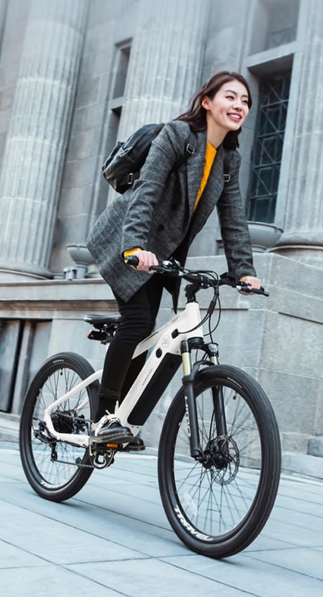

<section class="info section__pt" id="info">
  <div class="container">
    <div class="info__inner">
      <div class="info__img-wrapper">
        <picture class="info__picture">
          <source
            type="image/avif"
            srcset="
              ../images/info-img-01@1x.avif 1x,
              ../images/info-img-01@2x.avif 2x
            "
          />
          <source
            type="image/webp"
            srcset="
              ../images/info-img-01@1x.webp 1x,
              ../images/info-img-01@2x.webp 2x
            "
          />
          
        </picture>
      </div>

      <div class="info__content">
        <div class="info__content-item">
          <h4 class="info__content-title">Комфорт и безопасность от HIMO</h4>
          <p class="info__content-text">
            Электровелосипед HIMO C26 позволит вам быстро и с комфортом
            добраться до места работы или учебы и не привязываться к городскому
            транспорту. Велосипед обладает прочной конструкцией и внушительным
            запасом хода, чтобы стать надежным транспортным средством в
            современных городских условиях. Легкая и прочная рама, 26-дюймовые
            колеса и 7-ступенчатая система трансмиссии позволяют уверенно
            передвигаться не только по асфальтированному дорожному полотну, но и
            по сложной загородной трассе.
          </p>
        </div>
        <div class="info__content-item">
          <h4 class="info__content-title">Прочная и легкая рама</h4>
          <p class="info__content-text">
            Рама HIMO C26 изготовлена из прочного и легкого алюминиевого сплава
            и отличается высокой надежностью, устойчивостью в аварийных
            ситуациях, превосходной управляемостью и комфортным передвижением по
            любой дороге.
          </p>
        </div>
        <div class="info__content-item">
          <h4 class="info__content-title">
            Комбинация режимов для увеличения запаса хода
          </h4>
          <p class="info__content-text">
            Электровелосипед HIMO C26 обладает увеличенным запасом хода. Его
            аккумулятор емкостью 10000 мАч с интеллектуальной системой
            оптимизации энергопотребления позволяет проехать до 60 км на одном
            заряде в режиме электропривода. При использовании на некоторых
            участках пути физической силы дальность хода увеличивается до 100
            км. Максимальная скорость передвижения HIMO C26 составляет 25 км/ч.
          </p>
        </div>
        <div class="info__content-item">
          <h4 class="info__content-title">Надежная трансмиссия</h4>
          <p class="info__content-text">
            7-ступенчатая система трансмиссии обеспечивает плавное и точное
            переключение передач, удобное управление скоростью и надежность в
            работе. Переключая передачи, вы сможете с минимальными усилиями
            заехать на горку и безопасно скатиться вниз.
          </p>
        </div>
        <div class="info__content-item">
          <h4 class="info__content-title">Вся информация на ЖК-дисплее</h4>
          <p class="info__content-text">
            Вся информация на ЖК-дисплее <br /> Большой информативный дисплей,
            вынесенный на рулевую стойку, отображает всю важную информацию о
            работе HIMO C26 в реальном времени. Вы сможете узнать актуальную
            скорость передвижения, уровень заряда или пройденный путь. Дисплей
            защищен от воздействия внешних факторов по стандарту IPX7 и не
            боится дождя и пыли.
          </p>
        </div>
        <div class="info__content-item">
          <h4 class="info__content-title">Удобное седло</h4>
          <p class="info__content-text">
            Электровелосипед HIMO C26 укомплектован велосипедным седлом от
            известного бренда Selle Royal. Трехмерная гелевая структура седла
            обеспечивает оптимальную упругость и высокий комфорт во время езды.
          </p>
        </div>
      </div>
    </div>
  </div>
</section>
